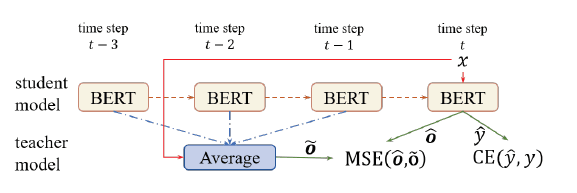

|
Improving BERT Fine-Tuning via Self-Ensemble and Self-Distillation
Supervisor: Xipeng Qiu and Yige Xu. Inspired by the success of widely-used ensemble models, we propose a self-ensemble method combining knowledge of BERT models at different time steps for more robust and accurate results, and further introduce a self-distillation idea to enable the base model to learn from its self-ensemble. |
 |